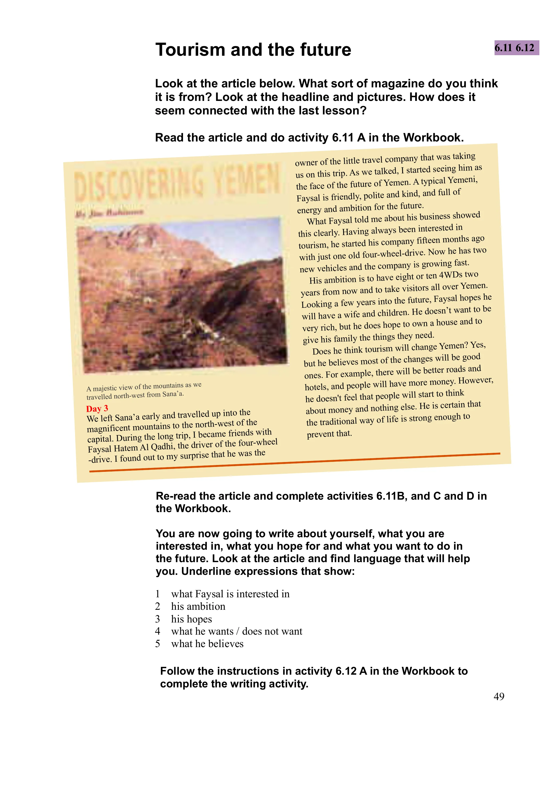

You are now going to write about yourself, what you are interested in, what you hope for and what you want to do in the future. Look at the article and find language that will help you. Underline expressions that show: 1 what Faysal is interested in 2 his ambition 3 his hopes 4 what he wants / does not want 5 what he believes Follow the instructions in activity 6.12 A in the Workbook to complete the writing activity.
these skills and interest بصيغة المفرد interest ووصل الشرطة بلا مسافات school-in، وحُفظ النص المطبوع حرفياً.6.12 A Use the questions to help you write notes about yourself. Then write three paragraphs about your own plans and views of the future. Paragraph 1: Thinking about the future 1 What are you good at in school? 2 What are you interested in out of school? 3 How could you continue with these skills and interest after you leave school-in your job, for example? 4 Will it be possible for you to do that? How? If not, what else are you likely to do? Why? Paragraph 2: My plans for the future 1 What are your ambitions for the next two or three years? 2 What do you hope will happen in the next five or ten years? Paragraph 3: Future changes in Yemen that will affect my life 1 What sort of changes do you think will change life for you in the future? 2 Which do you think will improve your life? 3 Which do you think may not be so good? 4 On balance, do you feel happy or unhappy about the future?
[
{
"num": 1,
"question": "1 what Faysal is interested in",
"model_answer": "Having always been interested in tourism",
"explain_ar": "بداية الفقرة الثانية."
},
{
"num": 2,
"question": "2 his ambition",
"model_answer": "full of energy and ambition for the future; His ambition is to have eight or ten 4WDs two years from now and to take visitors all over Yemen.",
"explain_ar": "نهاية الفقرة الأولى وبداية الفقرة الثالثة."
},
{
"num": 3,
"question": "3 his hopes",
"model_answer": "Faysal hopes he will have a wife and children; he does hope to own a house and to give his family the things they need.",
"explain_ar": "منتصف ونهاية الفقرة الثالثة."
},
{
"num": 4,
"question": "4 what he wants / does not want",
"model_answer": "He doesn't want to be very rich (but wants to give his family the things they need).",
"explain_ar": "الفقرة الثالثة."
},
{
"num": 5,
"question": "5 what he believes",
"model_answer": "he believes most of the changes will be good ones; he doesn't feel that people will start to think about money and nothing else; He is certain that the traditional way of life is strong enough to prevent that.",
"explain_ar": "الفقرة الرابعة."
}
][
{
"label_ar": "Paragraph 1: Thinking about the future (المهارات والاهتمامات والمهنة الممكنة)",
"placeholder": "At school I am good at science and English, and outside school I am interested in repairing electronics and helping younger students understand difficult topics. After leaving school, I hope to continue using these skills by studying electrical engineering at university and building a useful technical career."
},
{
"label_ar": "Paragraph 2: My plans for the future (الطموح لـ 2–3 سنوات ثم 5–10 سنوات)",
"placeholder": "My main ambition for the next two or three years is to graduate with high grades, improve my practical skills and start university. Looking five or ten years into the future, I hope I will qualify as an engineer, start a small team of my own, and support my parents and family."
},
{
"label_ar": "Paragraph 3: Future changes in Yemen that will affect my life (التحولات الإيجابية والسلبية والمحصّلة)",
"placeholder": "In the future, better education facilities, cleaner energy and faster internet connections will improve our daily lives and create new jobs. On the other hand, rapid city growth may make living more expensive and push people to spend less time together. On balance, however, I feel positive and hopeful about the future because our strong community values will help us handle change wisely."
}
]{
"pb_text_vs_image": "طُوبقت تعليمات 6.12 في PB ص 49 مع pb-51.png وقورنت بعبارات مقال فيصل الخمس.",
"wb_ocr_vs_image": "طُوبقت WB ص 79–80 (wb-080.png وwb-081.png): حُفظت صيغة 'skills and interest' و'school-in' حرفياً ورُصد ترقيم صفحة 80 بالأرقام الهندية '٨٠'."
}